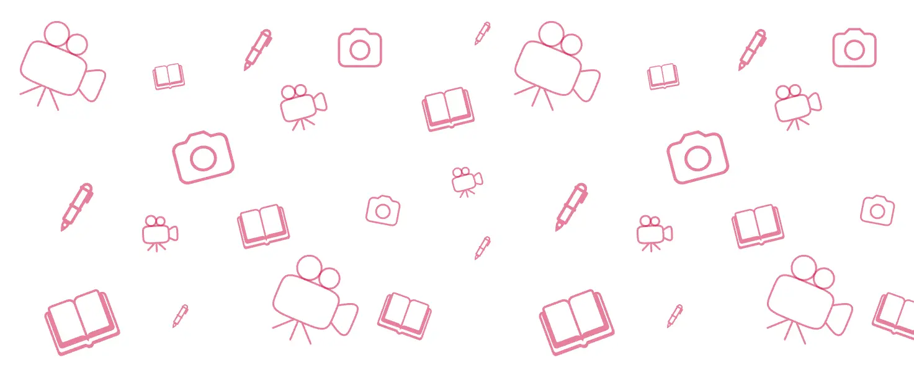

Tema 2
Kombinationen af CSS Grid og media queries muliggør responsive layouts, der tilpasser sig forskellige skærmstørrelser. I dette eksempel anvendes en media query til at ændre layoutet for skærme bredere end 750px, hvor grid-systemet definerer kolonneopsætninger med grid-template-columns og mellemrum med gap. Dette sikrer en fleksibel og brugervenlig visning på større skærme. Jeg fokuserede på en "mobile first" tilgang, anvendte gestaltprincipper og testede med browserens developer tools. Til sidst validerede jeg koden og uploadede websitet til mit webhotel.